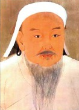

Cengiz Han (1162-1227), Asya’nın engin topraklarını istila etmek üzere göçebe kavimlerden oluşan acımasız ordusunu yirmi yıl boyunca kumanda eden bir Moğol savaşçısıdır. Öldüğü zaman, kurduğu Moğol İmparatorluğu dünya tarihindeki en büyük birleşik imparatorluktu. Cengiz Han’ın varislerinin yönetimi altında imparatorluk çabucak dağılmışsa da, kanlı Moğol istilaları hem Avrupa hem de Asya tarihinde bir dönüm noktası oldu ve Moğol kralına bugüne kadar gelen bir zalimlik şöhreti kazandırdı.

Cengiz Han, bir Moğol başbuğunun oğlu olarak Timuçin adıyla dünyaya geldi. Doğu Asya’daki Moğollar, geleneksel olarak bir diyardan öteki diyara gezerek, göçebe yaşıyordu. Babasının öldürülmesinden sonra, Timuçin on üç yaşındayken bir Moğol kavminin şefi oldu. Karizmatik bir liderdi. Timuçin en sonunda, liderlerinin ona ‘Cengiz Han’ –tüm imparatorların imparatoru– unvanını verdiği Moğol kavimlerinin tamamını birleştirebildi.
Moğolları birleştirdikten sonra Cengiz Han hayatının geri kalanına yayılacak bir istila hareketi başlattı. Orduları, bugünkü Çin, Rusya, Moğolistan, İran, Afganistan, Pakistan, Hindistan, Kazakistan, Türkmenistan, Özbekistan ve Kırgızistan’ın topraklarını işgal etti. Cengiz Han’ın ölümünden kısa bir süre sonra, Moğol İmparatorluğu en geniş sınırlarına ulaştığında Kore’den Doğu Avrupa’ya kadar uzanıyordu.
Moğol orduları disiplinli, güçlü ve korkunçtu. Bilinen stratejileri öncelikle düşman şehre teslim olma fırsatı vermek, ama eğer teklif reddedilirse şehirdeki herkesi öldürmekti. Cengiz Han, böyle bir terörün sonucu olarak tüm ulusları direnmeden boyun eğmeye ikna edebildi.
Moğollar’dan önce Avrupa ile Asya arasındaki temas asgarî seviyedeydi. Cengiz Han tarafından kurulan Moğol İmparatorluğu, iki kıta arasında fikir alışverişinin ve ticaretin yolunu açtı. Moğollar, Asya ile Avrupa arasında bir ticaret yolu olan İpek Yolu’nu açtılar ve böylece İtalyan Marko Polo gibi Avrupalılar hanların ülkesine seyahat edebildiler.
EK BİLGİLER:
1. Moğol göçebeler, kavim başka bir bölgeye göç edeceği zaman taşınabilen, “yurt” olarak bilinen yuvarlak çadırlarda yaşadılar. Moğolistan nüfusunun yaklaşık % 40’ı, çoğu göçebe yirminci yüzyılın ikinci yarısında kentlere yerleşmesine rağmen, halen hayvancılık yapmaktadır.
2. Moğol İmparatorluğu’nun saltanatı Batılı yazarları yüzyıllar boyu büyülemiştir. Cengiz Han’ın torunu Kubilay Han tarafından yaptırılan şatafatlı yazlık başkent, İngiliz romantik şair Samuel Taylor Coleridge’in ünlü şiiri “Kubilay Han”a (1797) esin vermiştir.
3. Moğollar, Japon adalarını istila etmeyi defalarca denemiş ama denizin zalim gücü olan rüzgar tarafından yok edilmiştir. Japonya’da kamikaze (ilahi rüzgar) efsanesi, Japonya’nın yenilmezliğinin bir kanıtı olarak yüzyıllarca nesilden nesile aktarıldı. II. Dünya Savaşı’nın sonunda çaresiz Japon pilotları, Japonya’yı Moğol istilasından kurtarmış olan ilahi rüzgarı yeniden canlandırmak adına intihar uçuşlarıyla Amerikan gemilerine saldırdılar.